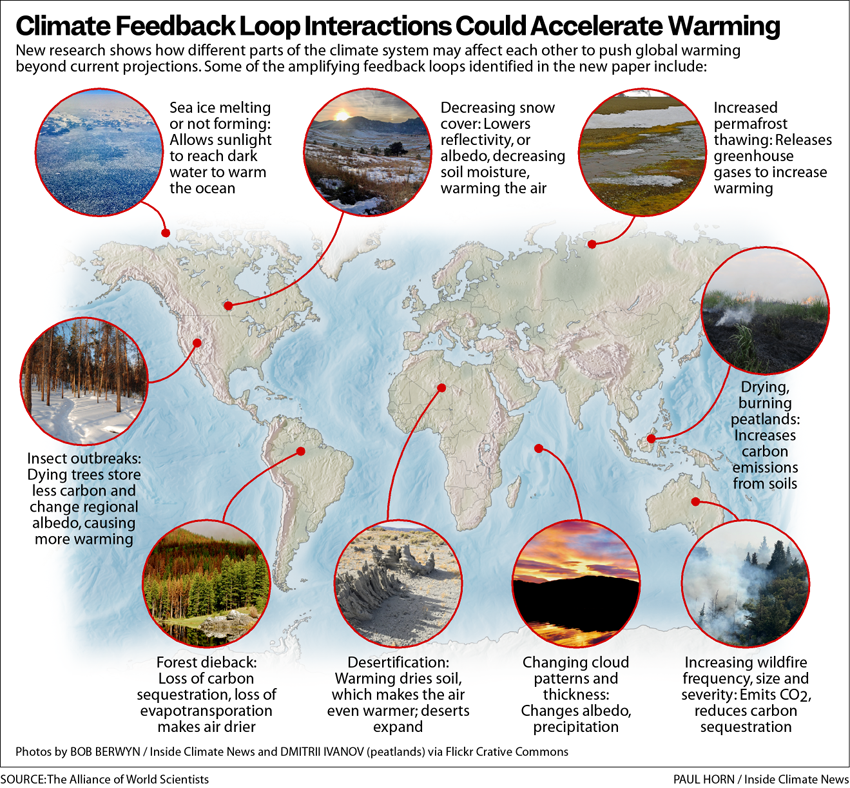

3 Model-evaluation
GCMeval: a tool for climate model ensemble evaluation

The global climate models indicate quite a range of future outcomes in terms of precipitation and temperature. To account for that, regional scenarios need to use fairly large multi-model ensembles.
3.1 Measuering Forcings
Earth is on a budget – an energy budget. Our planet is constantly trying to balance the flow of energy in and out of Earth’s system. But human activities are throwing that off balance, causing our planet to warm in response.
Adding more components that absorb radiation – like greenhouse gases – or removing those that reflect it – like aerosols – throws off Earth’s energy balance, and causes more energy to be absorbed by Earth instead of escaping into space. This is called a radiative forcing, and it’s the dominant way human activities are affecting the climate.
limate modelling predicts that human activities are causing the release of greenhouse gases and aerosols that are affecting Earth’s energy budget. Now, a NASA study has confirmed these predictions with direct observations for the first time: radiative forcings are increasing due to human actions, affecting the planet’s energy balance and ultimately causing climate change. The paper was published online March 25, 2021, in the journal Geophysical Research Letters.
NASA’s Clouds and the Earth’s Radiant Energy System (CERES) project studies the flow of radiation at the top of Earth’s atmosphere. A series of CERES instruments have continuously flown on satellites since 1997. Each measures how much energy enters Earth’s system and how much leaves, giving the overall net change in radiation. That data, in combination with other data sources such as ocean heat measurements, shows that there’s an energy imbalance on our planet. But it doesn’t tell us what factors are causing changes in the energy balance.
This study used a new technique to parse out how much of the total energy change is caused by humans. The researchers calculated how much of the imbalance was caused by fluctuations in factors that are often naturally occurring, such as water vapor, clouds, temperature and surface albedo (essentially the brightness or reflectivity of Earth’s surface). The researchers calculated the energy change caused by each of these natural factors, then subtracted the values from the total. The portion leftover is the radiative forcing.
The team found that human activities have caused the radiative forcing on Earth to increase by about 0.5 Watts per square meter from 2003 to 2018. The increase is mostly from greenhouse gases emissions from things like power generation, transport and industrial manufacturing. Reduced reflective aerosols are also contributing to the imbalance.
3.2 Modeling Feedbacks Interactions
Berwyn
A new study categorizes climate feedback loops and the possibility they could push the climate past planetary tipping points.
Recent climate projections may be underestimating the pace of global warming in an atmosphere damaged by greenhouse gas emissions, because the interaction of powerful climate feedback loops that can accelerate warming are not well-represented in key climate models, an international team of scientists concluded in a study (paywall) published today in the journal One Earth. Their findings suggest that efforts to reduce emissions require even more urgency to avoid worst-case climate outcomes, the team reported.
We would like to see an IPCC special report that focuses on the many risky climate feedbacks and the possible acceleration towards planetary tipping points.
Recent evaluations conclude that, if countries meet the emissions-reduction targets they’ve set for themselves, the average global temperature would warm 2.7 degrees Celsius from pre-industrial temperatures by 2100, which would have catastrophic impacts for people and ecosystems. But if some of the feedback loops shown in the new paper accelerate, warming could soar well above that level, toward 4 degrees Celsius, by the end of the century.
The researchers examined 41 climate feedback loops and found 27 that significantly increase warming but may not be fully accounted for in climate models. The models often overlook the cumulative effect all of them together might have.
We are particularly concerned about several biological feedback loops, including permafrost thawing, forest destruction, loss of soil carbon and smoldering peatlands. These feedbacks may contribute significantly to warming over the course of the century.

The Arctic, warming now at four times the global average rate, shows how feedback loops can interact. Scientists know thawing permafrost releases greenhouse gases. A 2017 study showed the potential for carbon releases from the disintegration of an Alabama-sized area of permafrost. Researchers, however, don’t currently expect that process by itself to cause runaway warming in the next few decades.
But Arctic sea ice is dwindling too, exposing more dark ocean water to absorb more heat, which leads to yet more ice melting. And the changes to sea ice extent and ocean surface temperatures affect the atmosphere above the sea and the permafrost.
What researchers don’t yet fully understand or show in climate models is how all those different processes can amplify each other, and whether their interactions will lead to sudden and irreversible changes in the next few decades.
Other climate feedbacks in the ocean could also accelerate global warming. The models used to calculate widely accepted global temperature increases, including those by the IPCC, give us the pathways towards holding the 1.5 degrees Celsius limit. The models assume that the ocean will continue to operate more or less in the same mode as today, in terms of heat uptake and in terms of the solubility of carbon dioxide. But the amplifying cycle of feedbacks could change that sooner than expected.
The most recent science reports from the Intergovernmental Panel on Climate Change identify a handful of the most important feedbacks that could push the climate past tipping points, but since they still can’t be adequately assessed, the international science panel can’t determine their probability of happening, or accurately project how they will interact.
“There’s a deeper picture here,” said co-author Tim Lenton, director of the Global Systems Institute at the University of Exeter. Lenton was deeply influenced by scientist James Lovelock’s Gaia hypothesis, which proposes that life interacts with its inorganic surroundings on the planet to form a self-regulating system that perpetuates the conditions required for it to persist. “That’s part of what some climate models may be missing,” he said. “Lovelock was a visionary in thinking about how humans and our actions are intertwined in that system, and of course, that’s also what the paper is about,” he said, “how to see ourselves as integral parts and actors in the system.” There has been an effort to bring a more faithful representation of the nuanced influences of life on the Earth into climate modeling, he said, but they aren’t yet fully integrated.
Evidence shows that the damage from global warming is going up in a nonlinear way, so every tenth of a degree more warming will cause more damage than the previous tenth
Berwyn (2023) Scientists Examine Dangerous Global Warming ‘Accelerators’